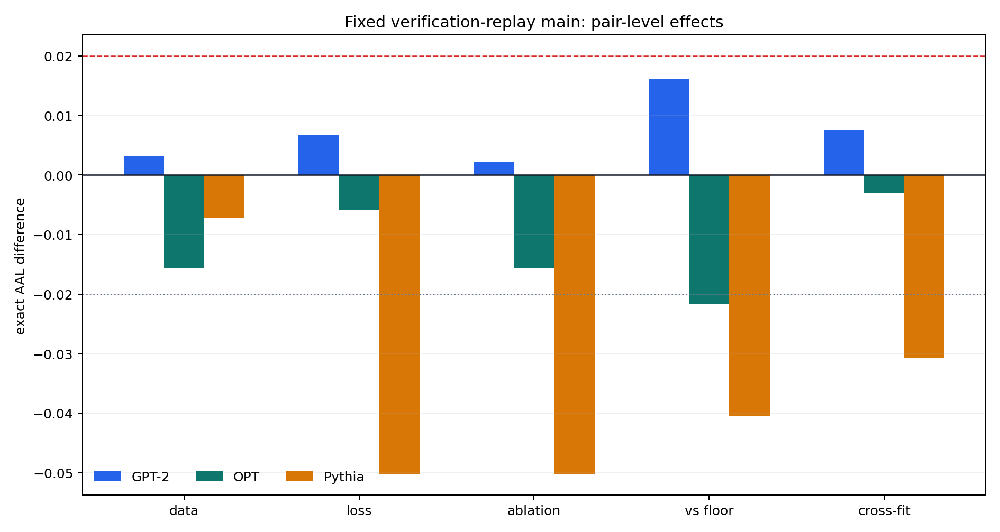
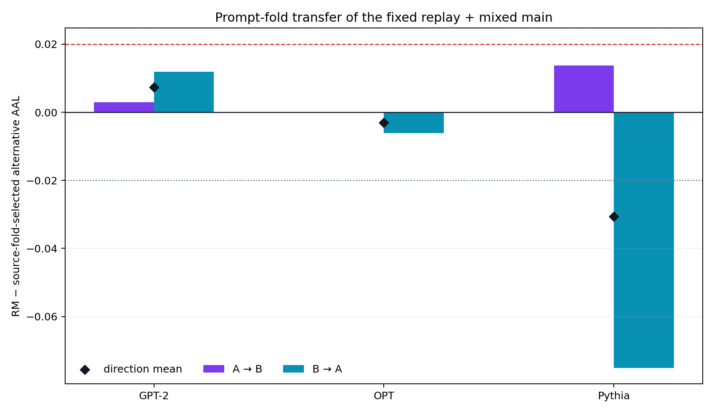

Target-assisted verified replay와 accepted-FKL/rejected-RKL mixed loss를
독립 pretrained AR drafter에 함께 넣었다. 구조와 treatment는 유효했지만,
고정 main replay + mixed는 3개 pair 어느 곳에서도
사전 정의한 ablation superiority를 만들지 못했다.
GPT-2에서는 모든 primary contrast가 작게 양수였지만 +.02 기준보다
작았다. OPT와 Pythia에서는 고정 main이 악화했고, Pythia에서는 mixed loss
자체의 simple effect가 −.0503 AAL이었다.
Verified replay가 학습 신호를 실제 verification state로 옮겼다는 것만으로는
충분하지 않았다. rejection-heavy 상태에서 고정 1:1 mixed loss를
그대로 적용하면 architecture-dependent negative effect가 남거나 커질 수 있다.
Structural PASS실패는 candidate 미생성, state mutation, grid 누락 또는 update 크기 0 때문이 아니다.
GPT-2 ← DistilGPT-2
약한 양의 신호, 그러나 모든 main 기준 미달
2.5550RM mean exact AAL
vs best H4 ablation+0.0022
vs H1 / no-update floor+0.0161
prompt-fold cross-fit+0.0074
방향은 긍정적이지만 사전 최소 효과 +.02에 못 미쳤다.
OPT-350M ← OPT-125M
Replay data와 fixed main 모두 음의 효과
2.3310RM mean exact AAL
vs best H4 ablation−0.0157
vs H1 / no-update floor−0.0216
prompt-fold cross-fit−0.0031
Worst-floor −.02도 baseline 비교에서 넘었다.
Pythia-410M ← Pythia-70M
Rejection-heavy exposure에서 mixed loss가 크게 악화
1.8887RM mean exact AAL
vs best H4 ablation−0.0503
vs H1 / no-update floor−0.0405
prompt-fold cross-fit−0.0307
Replay+LK 1.9390 대비 replay+mixed 1.8887.
02 · Frozen 2×2
바꾼 것은 data source와 loss family뿐이다
네 H4 cell은 같은 pre-step drafter parameter와 full AdamW state에서 시작해,
같은 4 Adam step과 48 loss position을 사용했다. 괄호 없는 수치는
GPT-2 / OPT / Pythia의 5-step mean exact AAL이다.
Hybrid LK · η=3
Accepted FKL / Rejected RKL · γ=.8
Local static gold-prefix anchors
Local + LKLL
GPT-22.5528OPT2.3284Pythia1.9155
Local + mixedLM
GPT-22.5518OPT2.3466Pythia1.8960
Target-assisted verified replay anchors
Replay + LKRL
GPT-22.5482OPT2.3368Pythia1.9390
Replay + mixedFROZEN MAIN · RM
GPT-22.5550OPT2.3310Pythia1.8887
H1 carrier와 true no-update는 bridge/floor comparator다. H1/H0와 H4가 compute-matched라는 주장은 하지 않는다.
03 · Primary effects
네 질문 모두 같은 패턴을 보였다
아래 dot plot의 범위는 AAL −.06 … +.03이다.
세로선은 worst floor −.02, zero, success threshold +.02 순이다.
GPT-2OPTPythia
Data effect · RM − LM
같은 mixed loss에서 verified replay가 local data보다 나은가?
GPT-2
+.0032
OPT
−.0157
Pythia
−.0073
−.06−.020+.02+.03
Loss effect · RM − RL
같은 replay data에서 mixed loss가 Hybrid LK보다 나은가?
GPT-2
+.0068
OPT
−.0059
Pythia
−.0503
−.06−.020+.02+.03
Ablation superiority
RM − best(LL, LM, RL): 고정 main이 모든 H4 대안을 이기는가?
GPT-2
+.0022
OPT
−.0157
Pythia
−.0503
−.06−.020+.02+.03
Current baseline gain
RM − max(carrier H1, no-update): 현재 fallback보다 실질적으로 나은가?
GPT-2
+.0161
OPT
−.0216
Pythia
−.0405
−.06−.020+.02+.03

원 fail-loud analyzer가 생성한 authoritative figure. 빨간 점선은 +.02,
회색 점선은 −.02다. Step·prompt·sampling seed는 반복 측정이며 pseudo-CI를 만들지 않았다.
04 · Ordered gate
첫 efficacy gate에서 멈췄다
사전 순서는 structural → ablation superiority → baseline gain → fold transfer였다.
뒤의 값도 완결성 때문에 보고하지만, 앞 gate 실패를 rescue할 수 없다.
최종 결정은 kill_v0_6_no_ablation_superiority. Candidate를 carrier에
commit하지 않았고, selection seeds 6–8을 열지 않았다.
GPT-2 · HCF +.0074
A→B
+.0030
B→A
+.0119
OPT · HCF −.0031
A→B
−.0001
B→A
−.0061
Pythia · HCF −.0307
A→B
+.0137
B→A
−.0751

Source fold에서 고른 best-fixed alternative를 반대 fold에서 RM과 비교했다.
이는 selector efficacy가 아니라 state-dependent ranking의 transfer audit이다.
05 · Mechanism clue
업데이트 크기는 비슷했지만, verification exposure는 달랐다
모든 efficacy packet은 48 proposal positions를 가졌다. Pythia에서는 accepted
positions가 약 5개뿐이라 mixed loss의 rejected-RKL component가 훨씬 자주 활성화됐다.
Realized accepted / rejected positions
GPT-2
local
23.8 / 24.2
replay
21.8 / 26.2
OPT
local
23.8 / 24.2
replay
24.2 / 23.8
Pythia
local
5.2 / 42.8
replay
5.4 / 42.6
Inference, not decomposition. Pythia의 큰 negative loss effect는
rejection-heavy binary partition에서 fixed 1:1 FKL/RKL geometry가 잘못
calibrated됐다는 가설과 양립한다. 이 panel만으로 RKL을 유일 원인으로
식별한 것은 아니다.
Matched H4 LoRA update norm
같은 pair 안에서 네 H4 action의 크기는 근접했다. loss/data cell별
utility 차이를 “한 cell만 거의 업데이트하지 않았다”로 설명할 수 없다.
왼쪽은 realized verification exposure, 오른쪽은 H4 LoRA update norm이다.
이 그림의 step 평균은 descriptive repeated measurement이며 architecture-level CI가 아니다.
06 · Scope & EOS
이 결과가 말하는 것과 말하지 않는 것
Fixed-32 EOS limitation
v0.5 endpoint와 비교 가능성을 위해 EOS를 terminal stop이 아닌 일반 common-support
token으로 처리했다. 따라서 이 결과는 EOS-stopped serving이나 Draft-OPD의
reference rollout estimand가 아니다.
fixed_32_token_endpoint_aligned_nonterminal
33exact rows with post-EOS tokens
485generated tokens after first EOS
16replay post-EOS loss positions
Exact generated EOS occurrences 33, replay emitted EOS 3, post-EOS replay anchor
blocks 4. 모두 descriptive audit이며 gate에 사용하지 않았다.
정확한 주장 경계
독립 pretrained AR pair의 seed-99 non-mutating draft-action shadow다.
Target carrier를 바꾸지 않았으므로 cumulative target-quality protection을 입증하지 않는다.
Training seed만 inferential unit이다. Step·prompt·corpus·sampling seed는 replicate가 아니다.
세 pair를 IID architecture population으로 pooling하지 않는다.
Transparent FP32 evaluator latency는 production serving throughput이 아니다.
v0.6의 가장 큰 negative effect는 rejection-heavy Pythia에서 fixed 1:1
accepted-FKL/rejected-RKL을 적용할 때 나타났다. 다음 가설은 sampled binary
partition을 완전히 제거하고, 각 replay 위치의 exact shared mass
A_k = Σ_v min(p_k(v), q_k(v))를 target과 draft가 함께 높이는
one-step objective다.
01 · VERIFIED REPLAYTarget-assisted 네 block-start full prefix는 유지하되 sampled accept/reject mask는 loss에 쓰지 않음02 · EXACT MASS OBJECTIVE네 replay anchor에서 exact common-support shared mass gradient를 계산해 평균03 · ONE ADAM CANDIDATE네 gradient 평균으로 Adam을 한 번만 진행; draft move는 live-H1 update norm 1× 안으로 제한04 · CE-GUARDED COMMITTarget CE guard와 draft trust radius를 모두 통과할 때만 두 독립 state를 commit, 아니면 no-update fallback
Draft lane: 네 replay gradient를 평균해 Adam 1 step. Candidate move가 live-H1 1× trust radius를 넘으면 축소하거나 true no-update로 돌아간다.
Target lane: 같은 acceptance-mass objective의 CE-conflicting component를 projection하고, auxiliary를 CE-only Adam moment에 넣지 않는다. Held-out CE bisection guard로 허용 step을 다시 줄인다.
Independence / gate: target과 draft parameter·optimizer는 계속 분리한다. Seed-99 same-state shadow에서 target CE non-inferiority와 cross-fold exact AAL을 통과하기 전 selection seed를 열지 않는다.
이 방향은 v0.6이 보여준 rejection exposure 차이 + matched action magnitude +
architecture-dependent mixed-loss effect에 맞춰, 불연속 binary partition과
네 번의 sequential Adam accumulation을 동시에 제거한다. Target은 여전히
drafter-aware하고 draft는 target-aware하지만, target CE update와 Adam state를
우선 보호한다. 아직 방법 성능의 증거가 아니며 별도 prospective freeze와 반증
실험이 필요하다.
Heatmap은 step-wise volatility와 non-constant rank를 보여준다. 특히 Pythia는
step 60의 양수와 step 80/100의 큰 음수가 공존해, 한 diagnostic step을 독립
효능 근거로 선택할 수 없다.
Freeze와 provenance
Utility-blind Stage 0 structural receipt와 executable freeze receipt를 먼저
materialize한 뒤 100-step shadow를 실행했다. Revision 1 preflight는 utility
생성 전에 scalar BF16 hash와 OPT terminal-EOS policy에서 fail-loud했고,
v2는 scalar byte hash를 고치고 fixed-32 nonterminal EOS policy를 명시적으로
freeze한 fresh root다. Revision 1 row는 utility evidence에 포함되지 않는다.
독립 exact-row 재계산 audit의 최대 절대 차이는 7.64e-16이었다.
Post-result handoff에서는 pre-executable flag를 기대하던 test-only fixture를
최종 executable contract로 맞춘 뒤 전체 489 passed를 다시 확인했다.
Frozen protocol·manifest·analyzer·trainer·launcher·lock hash는 변하지 않았다.
{kind=link}
{kind=link}